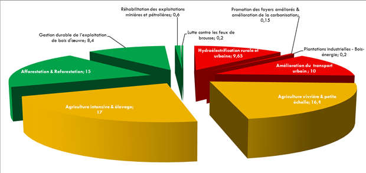

Year of reference: 2000.
Commitment Period: 2021 - 2030.
Contribution Type: Conditional.
Sectors taken into account: Agriculture, Forestry and Energy.
Gases involved: CO2, CH4, N2O.
Reduction level: 17%.
The CPDN's financing requirements of the Democratic Republic of Congo: USD 21.622
billion, of which: Adaptation: USD 9.082 billion; Mitigation: USD 12.540 billion.
The Democratic Republic of the Congo (DRC) is characterized by (i) its wealth of exceptional natural resources (forests, mines, water resources, biodiversity, energy), (ii) its dense hydrographic network , The Congo River Basin is the most dominant (3.7 million km²), and (iii) has an estimated population of about 75 million, with a population growth rate of 3.1% Of the informal sector.
The National Sustainable Development Strategy and the Government Action Program for 2012-2016 and the 2030 Emergency Outlook focus on priority areas including mining, agriculture, forestry and the development of the industrial fabric in A more decentralized framework
The integration of environmental concerns, in general, with sustainable development and climate change in particular, into all sector strategies and national development planning remains a key issue.
On the economic front, the country is making gains in average GDP growth of 5.6% over the period 2006-2010 and 8.1% between 2011 and 2013. National private sector investment has increased little (Less than 5% of GDP between 1990 and 2010). Over the past 10 years, public spending has focused on developing the infrastructure needed for economic development. In addition, the agricultural sector, which accounts for almost 70 per cent of the country's labor force, contributes 50 per cent to the national economy (UNDP, 2010).
Despite the progress made, however:
The lack of both internal and external funding for the effective implementation of large-scale strategies and action plans in various areas as well as major legal and institutional reforms is a major challenge. The absence of a genuine policy of inter-sectoral interventions in a context of combating conflicts of competence between different sectors (mining, agriculture, forestry) does not facilitate the implementation of climate change actions within a framework Federating programs for both mitigation and adaptation.
In recent years, the DRC has been developing its vision of development towards emergence by 2060, within the framework of the materialization of the Revolution of Modernity, the planning of which is sequenced in three phases, namely:
However, it should be noted that the DRC is a low-carbon country to date, with distinctive features that distinguish it from other territories: the natural capital of its forest, its hydroelectric potential and its interconnection capacity with the countries of the sub-region, it’s very important growth potential. Given the envisaged national development vision, the country should orient its development towards a long-term, sustainable and environmentally friendly development perspective.
The DRC ratified the United Nations Framework Convention on Climate Change (UNFCCC) and the Kyoto Protocol in 1997 and 2005. Since then, it has carried out a series of activities in the following areas:
(i) Commitment to the Forest Sector Investment Program (2010);
(ii) The adoption of the National Framework Strategy on REDD + (2012);
(iii) The creation of the National REDD + Fund in 2012;
(i)The low carbon development strategy (2012);
(ii) The DRC's National Adaptation Plan for Climate Change (2014);
(iii) cross-sectoral integration into sectoral policies and strategies;
The Ministry of the Environment and Sustainable Development (MEDD), through the Sustainable Development Department (DDD), a governmental body responsible for international negotiations, responsible for coordinating and monitoring the harmonious and coherent implementation of the Government on climate change, manages GHG inventories.
A national climate change committee, under the supervision of the Secretary General for Environment and Sustainable Development, in an intersectoral and interdisciplinary approach, provides the main guidelines for the implementation of climate change programs and projects.
Under the supervision of the DDD, teams of experts from government ministries and departments, national universities and research centers, private institutions and non-governmental organizations are responsible for defining methodological approaches and implementation Work to estimate GHG emissions and assess vulnerability to the effects of climate change, as well as technological needs. The responsibility for the formal approval of the inventory reports of emissions is specifically the responsibility of the National Climate Committee, which submits it to the Government.
A national monitoring, monitoring, verification and reporting system related to REDD + activities has been developed within MEDD. Operational technical units work on three pillars of this system. These include (i) Satellite Land Surveillance System (SSTS), (ii) National Forest Inventory (NFI), and (iii) Greenhouse Gas Inventory (IGES). To date, each of these three pillars is making considerable progress in terms of outputs and technical and human capacity building. A similar system for monitoring emissions outside forests is being formulated as part of the process of developing the low carbon development strategy and formulating NAMAs
The greenhouse gas inventory carried out in the DRC (MEDD, 2015) shows the main emitters. These are mainly land use, land-use change and forestry, followed by agriculture and energy. For the rest, emissions are negligible.
The National Adaptation Program for Climate Change, NAPA (MECNT, 2006) has established a limited mapping of DRC vulnerability to the impacts of climate change. It has, however, revealed enormous concerns about agriculture, water resources and coastal areas, which are highly vulnerable in the areas of food security and health.
The following observations emerged from the analyzes carried out:
(A) projections of temperature changes by 2050 are of the order of 1 to 2 ° C and 1.5 to 3 ° C by 2100 under the low-emission scenario B1 (Van Garderen, and Ludwig, 2013);
(B) the results obtained in the Pitman simulation at the Bukama station for the period 2046-2065 show an increase in current and potential evapotranspiration of 10-15%;
(C) on the basis of analyzes of the climatic history of the Kinshasa N'Djili site,
(D) under the Pitman hydrological model for Bukama station, it appears that:
(E) Analysis of the simulation results of Schellnhuber et al. (2013), stipulate an increase in sea level of about 10% from the current level along the coastlines of the African continent. For the DRC, this increase will be of the order of 60-70 cm for the scenarios of 2 ° C of temperature rise (RCP 2.6).
The five major climate risks (intense rains, coastal erosion, floods, heat seizures, and seasonal droughts) with high impact that threaten the daily lives of populations, including loss of life, destruction of infrastructure, erosion, destruction Especially the urban poor, and increase vulnerability due to water-borne diseases. Seasonal droughts cause serious disturbances in agricultural calendars.
The DRC's vision for the implementation of adaptation is rooted in the National Adaptation Program for Adaptation to Climate Change (NAPA, 2006). The program identified three priority areas for adaptation interventions:
Since 2014, a process of updating the NAPA guidelines and integrating the issue of adaptation into sectoral policies and strategies, participatory and multidisciplinary, was initiated within the framework of the National Plan of Adaptation to the climatic changes (PNA).
The country has already made efforts to develop urgent adaptation actions in the areas of agriculture, community rehabilitation and the fight against coastal erosion. It is:
The DRC faces various socio-economic development challenges, coupled with its vulnerability to the impacts of climate change. In addition, it faces major challenges across its territory for the development of a coherent adaptation program. These include:
The needs relate mainly to the agriculture sector, the energy and transport sector with access to reinforcement of drinking water supply, sanitation and waste management, reinforcement of conservation measures, biodiversity and population integration in the forestry sector and integrated coastal zone protection. Total investment requirements amount to USD 9.082 billion, including:
Figure 1 : Breakdown of adaptation cost by sector (in billion USD).
The country recognizes that monitoring and evaluation of adaptation policies and programs is crucial in order to ensure that resources are targeted on the measures that will provide the best chance of increasing the resilience of its population. The development of key adaptation indicators has already been explored within the framework of the NAPA-ASA project and will be continued during the implementation of the NAP-AFE and PANA-Coastal Zone projects. The main lessons learned will be shared with all programs. The objective is to integrate adaptation and vulnerability indicators into the national monitoring, reporting and verification (MRV) system to be developed
2021 to 2030.
The DRC's contribution to mitigation will be based on measures coupled with a minimal effort to reduce emissions in relation to the projected emissions by 2030 if the status quo is maintained.
Given the volume of investment required to meet the DRC's target for mitigation, in the light of national development priorities, only a minimal portion of its contribution can be financed from its own resources.
These actions will be conditioned by the provision of adequate support in terms of financial resources, technology transfer and capacity building national level. To this end, it is important that access to resources facilitating the implementation of activities within the DRC CPDN to be promoted.
The DRC is committed to reducing its emissions by 17% by 2030 compared to emissions from the status quo (430 Mt CO2e) scenario, a reduction of just over 70 MtCO2e avoided (Ministry of the Environment, 2009).
Indeed, the national context is as follows: (i) forest area of the DRC in the order of 152 million ha in 2010 (MEDD, 2015), (ii) deforestation rate between 1990 and 2010 0.32% (MEDD, 2015); (Iii) deforestation and forest degradation caused mainly by commercial (~ 40%) and subsistence (~ 20%) and by cutting firewood (~ 20%)4. Provision is made for projects to plant around 3 million hectares of forest by 2025 under the afforestation and reforestation5 programs, which would allow the sequestration of approximately 3 million tons of CO2.

Figure 2: Evolution of GHG emissions from 2000 to 2030
The main levers of interventions identified concern the sectors Agriculture, LULUCF and Energy

Figure 3 : Emission reduction potential per lever in Mt CO2e
The total cost for all mitigation and carbon sequestration levers in the three sectors concerned is estimated at USD 12.54 billion.

Figure 4 : Breakdown of the cost of emissions reduction by leverage (in millions of USD).
The sectors concerned are LULUCF, Agriculture and Energy. The GHGs concerned are CO2, CH4 and N2O. The Industrial Processes and Waste sectors are not taken into account given their minimal contribution to the GHG emissions balance in the DRC.
In accordance with the GHG emission accounting and reporting rules, the DRC CPDN has used the 1996 Revised Guidelines and the 2006 IPCC, the methodological guidance of the Convention for the estimation of emissions Greenhouse gas (GHG) emissions and reporting, and complementary ALU (Agriculture and Other Land Use) methodologies and Guides to Good Practice (IPCC 2000 and 2003).
For the implementation of its CPDN, given that the Ministry of the Environment and Sustainable Development (MEDD) has a technical responsibility for the implementation of the country's environmental policy, the DRC will rely on the mechanism already in place. Implementation of government action on climate change, through the Directorate of Sustainable Development (DDD).
For the implementation of the various initiatives of the projects, the DDD sets up a multisectoral and multidisciplinary team of experts for the definition and design of methodologies, data collection, data processing, Implementation of climate change related tasks. This team is set up as a consultation and information group to ensure the coherence of the proposed methods.
The DRC is one of the Least Developed Countries and is the country with the lowest human development index according to the 2014 Human Development Report. The country therefore faces many challenges in terms of socio-economic development. In addition, the country must minimize the risks of climate change impacts, due to the high vulnerability of certain economic activities, such as agriculture and forestry.
The DRC's contribution to global GHG emissions is very low (about 0.5% in 2010).
Moreover, the GHG intensity relative to the Gross Domestic Product (GDP) is also very low.
The country, with its very large forest cover of 152 million ha in 2010 (MEDD, 2015), is a net carbon well. Despite this, the DRC proposes to implement mitigation actions in order to reduce its emissions by 17%. In this context, the Democratic Republic of the Congo considers its Contribution to be ambitious and equitable.